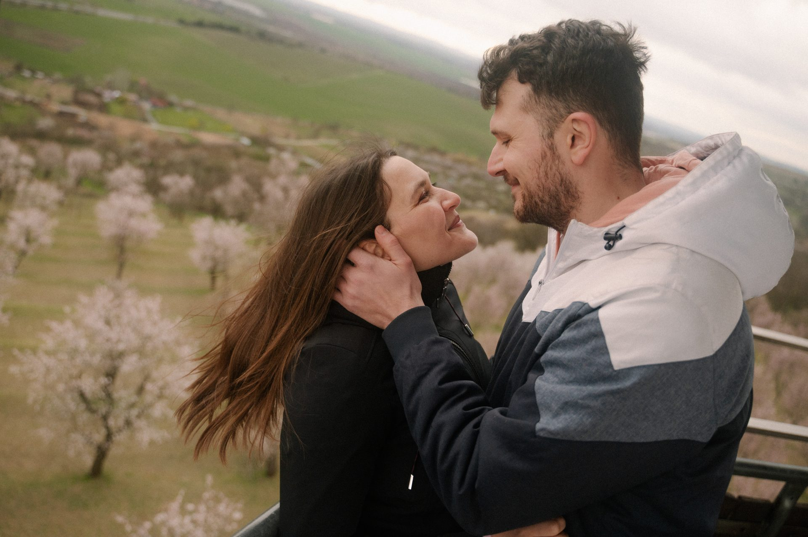
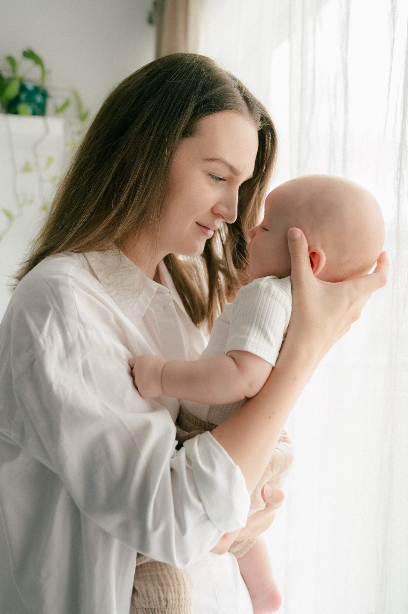
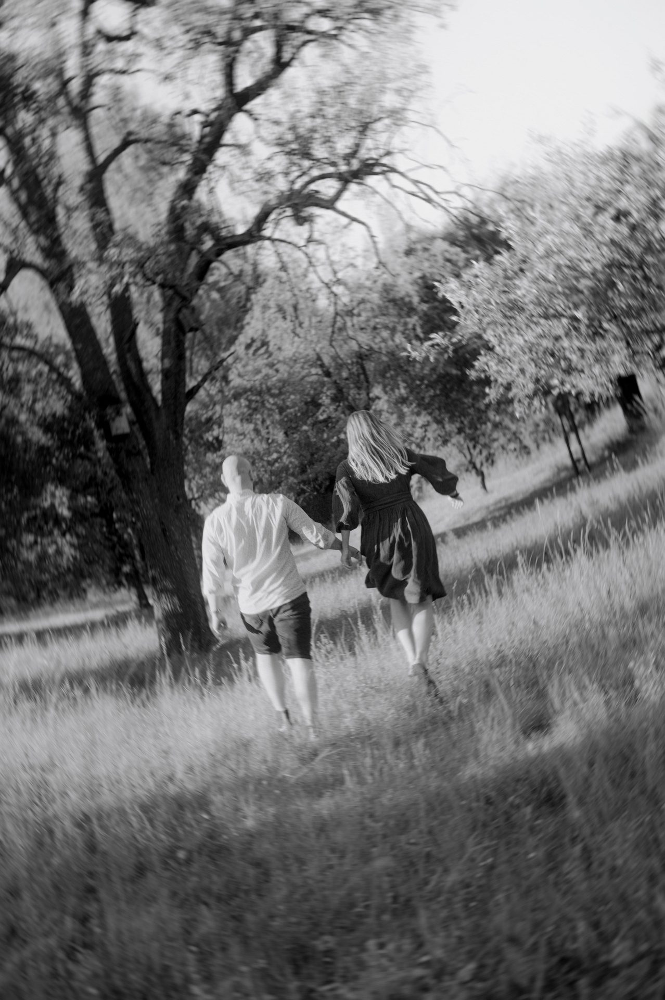
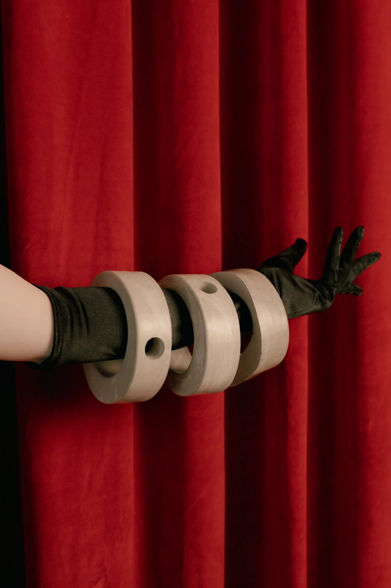

blog
Příběhy ze svateb, rady před focením a pohled do zákulisí. Píšu o tom, jak fotím, co mě baví a co se vám může hodit.



 svatby · 6 min čtení
svatby · 6 min čteníKlára a Michal: svatba na dvoře starého pivovaru
Když mi Klára poprvé psala, měla jasno jen v jedné věci: nechtěla den, který by se odehrával podle harmonogramu.
číst dál rady před focením · 5 min čtení
rady před focením · 5 min čteníco si vzít na sebe na focení: 7 tipů, aby ti to slušelo
Oblečení hraje na fotkách obrovskou roli. Proto jsem sepsala pár rad a základních pravidel, kterých je fajn se při výběru outfitu držet.
číst dál
ze zákulisí · 4 min čteníbetonové vázy v obýváku místo ateliéru
Studio jsme neměli, jen obývák, jedno okno a pár bílých papírů. Ukážu ti, jak jsem nad focením přemýšlela.
číst dál rady před focením · 3 min čtení
rady před focením · 3 min čtenírodinné focení bez stresu: 7 tipů, jak se připravit
Rodinné focení by nemělo být o stresu, ale o pohodě. Nemusíte mít všechno dokonalé a děti nemusí stát na místě.
číst dál rady před focením · 2 min čtení
rady před focením · 2 min čteníuniverzální lokace na focení, které máš na dosah
Často mi lidé při domlouvání focení píšou, že kolem sebe nemají žádné hezké místo. Všude je jen pole, silnice nebo dětské hřiště.
číst dál rady před focením · 2 min čtení
rady před focením · 2 min čtenírodinné focení jako vzpomínka: proč má smysl ho dělat pravidelně
„Čas letí.“ Všichni to říkáme, všichni to víme, ale naplno si to uvědomíme většinou až při pohledu na staré fotky.
číst dál